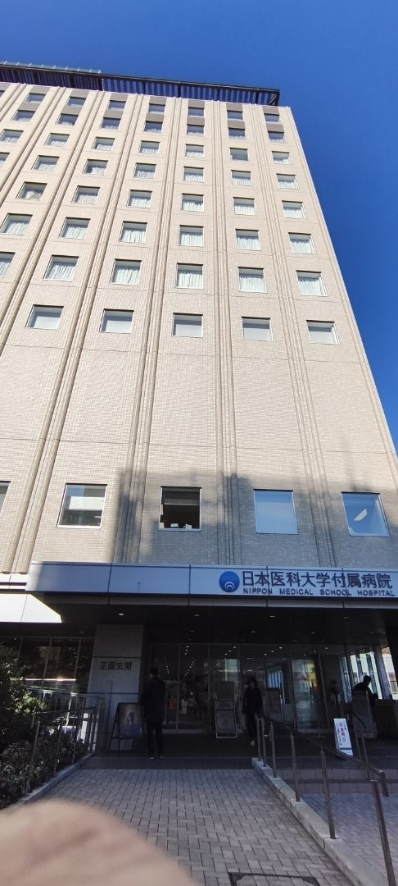
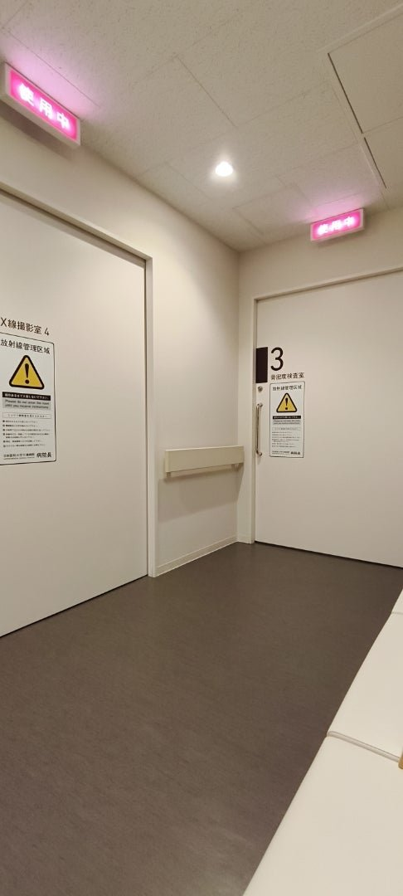
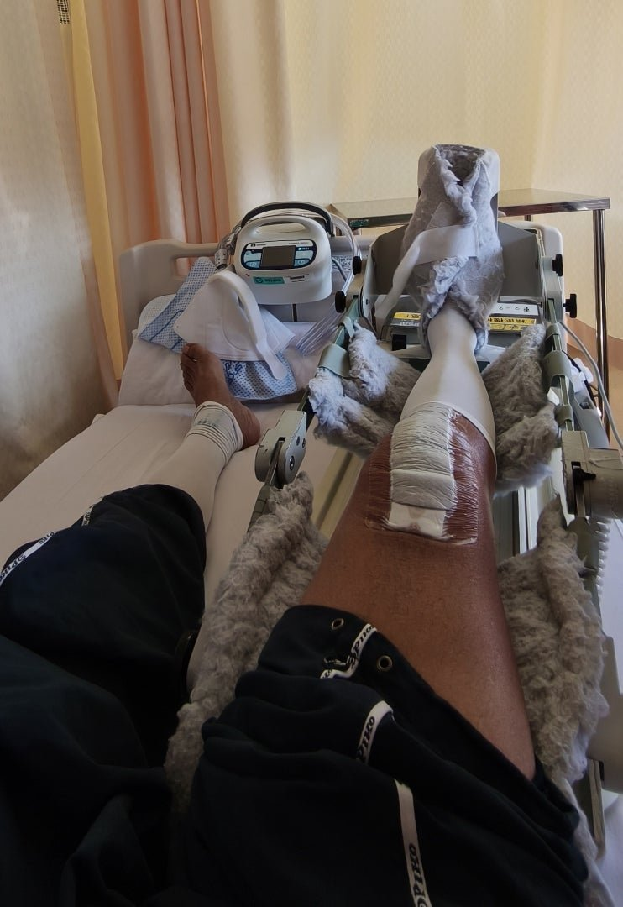
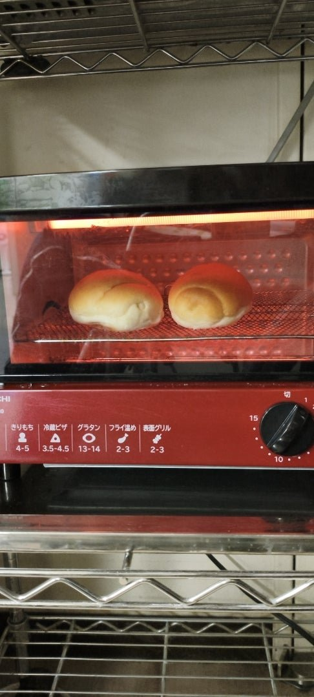
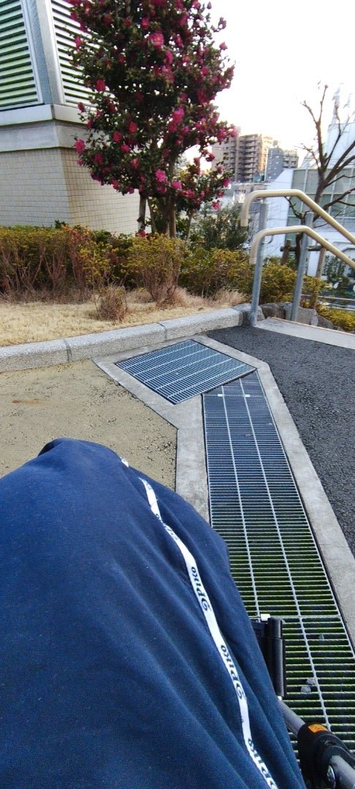
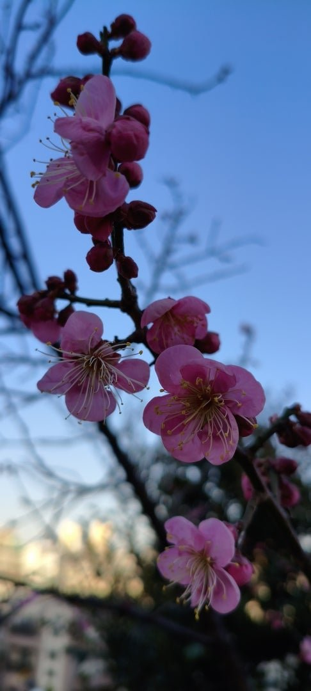
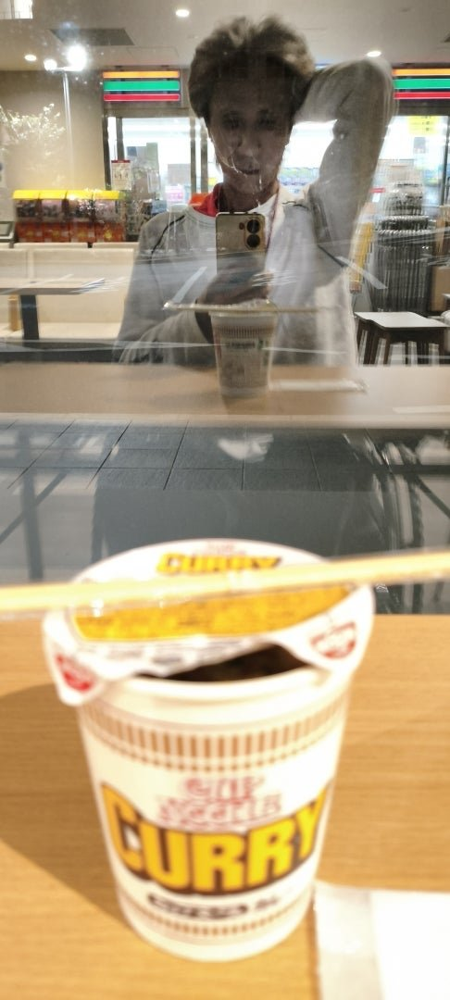
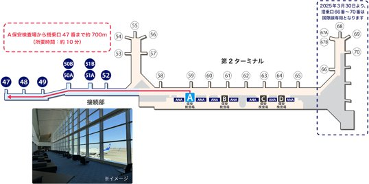

右膝 人工関節手術9日目 リハビリ5日目
天気も良く穏やかな文京区千駄木
日差しがあるので暖かいです😊朝イチで採血3本直ぐにレントゲン撮影そしてリハビリテーション午前の部。目まぐるしい。

9時のレントゲンは空いていて直ぐに撮影出来ました。しかし、車椅子で腕が筋肉痛になり、歩行器で行ったら動けなくなりました。イテテ………（笑）💧

ドクターストップなので安静にすることも回復への近道ですね？

朝食のパンは焼くこともできます。
香ばしいパンの香りを久し振りに嗅いでホッとしました。コーヒーが出ると最高……（笑）

車椅子に乗って中庭散歩中、花の蜜を吸いにシジュウカラやメジロが来るので見ているのが楽しいです。
紅梅、白梅がさいています

今夜中の2時半🕝️コンビニ前のフードスペースに居ますが、休憩中の看護師さんが多くカップラーメンを食べています。
健康を害さないようにと祈るばかりです。

手術から9日経ちました。あと5日で退院歯とても無理と思います。
右足は自力で上がらず歩くこともままならず右足に体重を乗せることが出来ません。杖を突いての電車での移動は出来そうもありません、
出来れば退院時に付き添いが居ると心強いです。階段上り下り、トイレ休憩、ホームの乗り換え、歩行での移動。
羽田空港第二ターミナルまでたどり着くことができれば何とかなると思います。

搭乗口までカートに乗ると楽そうです。一番左奥が八丈島行きゲートです。遠いです。
※ この記事はアメブロからの移行記事です（原文はこちら）